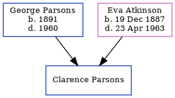

Clarence Armine Parsons
[ Home ] | [ Calendar ] | [ Surnames Index ] | [ Errors ] | [ Family History ]The child of George Parsons and Eva Atkinson, Clarence Parsons was the fourth cousin once-removed on the father's side of Nigel Horne.
Parents
- George Meville was born in 1891
- Eva Coleman was born on 19 Dec 1887
Family Tree
Generated by ged2site. Last updated on Jul 3, 2024